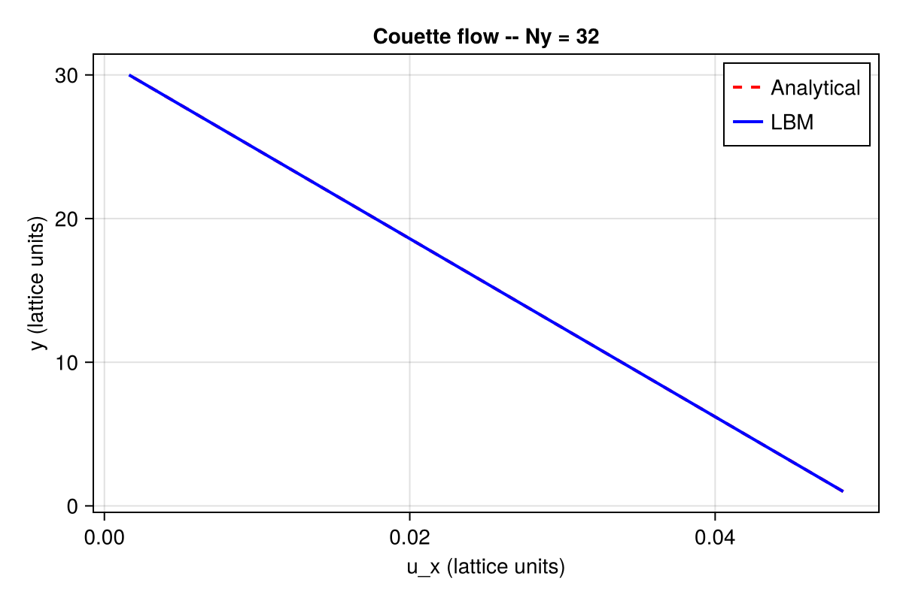
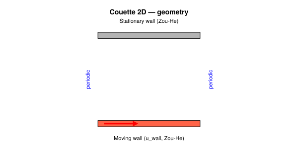
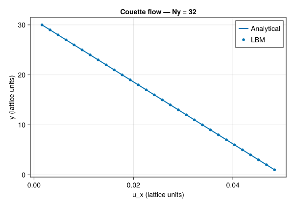
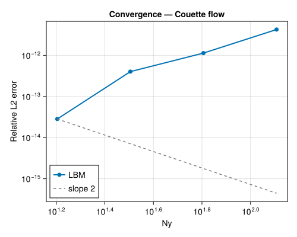

Couette Flow (2D)
Concepts: LBM fundamentals · Boundary conditions
Validates against: analytical linear profile $u_x(y) = u_\text{wall}\, y / L_y$
Download: couette.krk
Hardware: Apple M2, ~10s wall-clock at N = 4×32

Problem Statement
Plane Couette flow is the steady, shear-driven flow between two parallel plates where one wall moves at constant velocity while the other is stationary. This is one of the oldest problems in fluid mechanics, first studied by Maurice Couette in the 1890s using concentric rotating cylinders.
In the planar version, the bottom wall moves at velocity $u_w$ in the $x$-direction, and the top wall is fixed. There is no pressure gradient and no body force –- the flow is driven entirely by viscous momentum transfer from the moving wall. At steady state, the velocity profile is linear:
\[u_x(y) = u_w \left(1 - \frac{y}{H}\right)\]
where $H$ is the channel height and $y$ is measured from the bottom (moving) wall. The velocity decreases linearly from $u_w$ at the bottom to zero at the top.
Why this test matters
Couette flow is not merely a sanity check –- it reveals a deep property of the LBM. The D2Q9 equilibrium distribution is quadratic in velocity:
\[f_i^{\text{eq}} = w_i \rho \left[1 + \frac{\mathbf{e}_i \cdot \mathbf{u}}{c_s^2} + \frac{(\mathbf{e}_i \cdot \mathbf{u})^2}{2 c_s^4} - \frac{\mathbf{u} \cdot \mathbf{u}}{2 c_s^2}\right]\]
A linear velocity profile $u_x(y) = a + by$ is at most first-order in the spatial coordinate. When such a profile is substituted into the equilibrium, the BGK collision operator leaves it exactly invariant –- the non-equilibrium part of the distribution is identically zero. This means:
- The numerical velocity profile matches the analytical solution to machine precision ($\sim 10^{-15}$), regardless of resolution.
- There is no spatial truncation error to converge away.
- The only requirement is that enough time steps are taken for the initial transient to decay.
This makes Couette flow the ideal test for boundary condition implementations: any error in the wall BC will show up directly in the velocity profile, without being masked by the spatial truncation error that exists in other benchmarks.
What are Zou–He boundary conditions?
The Zou–He method Zou & He (1997) is an on-node velocity/pressure boundary condition for the LBM. Unlike bounce-back (which places the wall halfway between nodes), Zou–He enforces the wall velocity exactly at the boundary node itself.
The idea is elegant: at a boundary node, some distribution functions point into the domain (known from streaming), while others point out of the domain (unknown). Zou–He uses the macroscopic constraints (known velocity or pressure) plus the assumption that the non-equilibrium part of the distribution has a specific symmetry (bounce-back of the non-equilibrium part) to close the system and compute the unknown populations.
For a moving wall at velocity $u_w$:
- The known incoming populations and the prescribed velocity give the density $\rho$ via mass conservation.
- The unknown outgoing populations are then determined from momentum conservation plus the non-equilibrium bounce-back assumption.
LBM Setup
| Parameter | Symbol | Value |
|---|---|---|
| Lattice | –- | D2Q9 |
| Domain | $N_x \times N_y$ | $4 \times 32$ (periodic in $x$) |
| Viscosity | $\nu$ | 0.1 (lattice units) |
| Wall velocity | $u_w$ | 0.05 (lattice units) |
| Mach number | $\text{Ma}$ | $u_w \sqrt{3} \approx 0.087$ |
| Collision | –- | BGK BGK (1954) |
| Bottom wall | –- | Moving wall, Zou–He BC, $u_x = u_w$ |
| Top wall | –- | Stationary wall, Zou–He BC, $u_x = 0$ |
| Time steps | –- | 20 000 (well beyond transient decay) |
Effective geometry
Because Zou–He is an on-node boundary condition, the wall velocity is imposed exactly at $j = 1$ (bottom) and $j = N_y$ (top). The effective channel height is therefore $H = N_y - 1$, and the physical coordinate of node $j$ is simply $y = j - 1$ (measured from the bottom wall). Fluid nodes span $j = 1, \ldots, N_y$.
This differs from half-way bounce-back (used in the Poiseuille example), where the wall sits between nodes and the effective height is also $N_y - 1$ but with a half-node offset in the $y$-coordinate.
Geometry

Simulation File
Download: couette.krk
# Couette flow: linear velocity profile
# Validation: ux(y) = u_wall * y / Ly
Simulation couette D2Q9
Domain L = 0.125 x 1.0 N = 4 x 32
Define u_wall = 0.05
Physics nu = 0.1
Boundary x periodic
Boundary south velocity(ux = u_wall, uy = 0)
Boundary north wall
Run 10000 steps
Output vtk every 2000 [rho, ux, uy]Key directives:
Boundary south velocity(ux = u_wall, uy = 0): applies the Zou–He velocity BC at the bottom wall with the prescribed velocity.Boundary north wall: applies the Zou–He BC at the top wall with zero velocity (equivalent tovelocity(ux = 0, uy = 0)).- No body force is needed –- the flow is driven entirely by the wall motion.
Code
using Kraken
Ny = 32
ν = 0.1
u_wall = 0.05
ρ, ux, uy, config = run_couette_2d(; Nx=4, Ny=Ny, ν=ν, u_wall=u_wall, max_steps=20000)Results –- Velocity Profile
We extract the velocity profile along the vertical centreline and compare it to the analytical linear solution. Because this is a shear flow with no $x$-dependence, the profile is identical at every $x$ location.
H = Ny - 1
j_fluid = 2:Ny-1
y_phys = [j - 1 for j in j_fluid] # on-node (Zou-He)
u_ana = [u_wall * (1 - y / H) for y in y_phys]
u_num = [ux[2, j] for j in j_fluid]
using CairoMakie
fig = Figure(size=(500, 400))
ax = Axis(fig[1, 1], xlabel="y", ylabel="ux", title="Couette — Ny = $Ny")
lines!(ax, y_phys, u_ana, label="Analytical")
scatter!(ax, y_phys, u_num, markersize=6, label="LBM")
axislegend(ax, position=:lt)
save(joinpath(@__DIR__, "couette_profile.svg"), fig)
fig
The numerical solution is indistinguishable from the analytical profile. This is not just "good agreement" –- it is exact agreement to machine precision. The relative $L_2$ error is typically of order $10^{-14}$ to $10^{-15}$, limited only by floating-point arithmetic.
This exactness is a unique property of the LBM for linear velocity profiles. Any deviation from this behaviour would immediately indicate a bug in the Zou–He boundary condition implementation.
Convergence Study
Because the linear profile is an exact steady state of the D2Q9 lattice, the convergence study for Couette flow looks fundamentally different from Poiseuille flow: the error does not decrease with resolution in any power-law sense. Instead, it remains at machine precision for all $N_y$.
We verify this by running at four resolutions. The number of time steps is scaled as $\sim H^2 / \nu$ to ensure the initial transient has fully decayed at each resolution.
Ny_list = [16, 32, 64, 128]
errors = Float64[]
for Ny_i in Ny_list
H_i = Ny_i - 1
nsteps = max(10_000, ceil(Int, 3 * H_i^2 / ν))
ρ_i, ux_i, _, _ = run_couette_2d(; Nx=4, Ny=Ny_i, ν=ν, u_wall=u_wall, max_steps=nsteps)
jf = 2:Ny_i-1
u_a = [u_wall * (1 - (j - 1) / H_i) for j in jf]
u_n = [ux_i[2, j] for j in jf]
L2 = sqrt(sum((u_n .- u_a).^2) / sum(u_a.^2))
push!(errors, L2)
end
fig2 = Figure(size=(500, 400))
ax2 = Axis(fig2[1, 1], xlabel="Ny", ylabel="L₂ error", title="Couette convergence", xscale=log10, yscale=log10)
scatterlines!(ax2, Float64.(Ny_list), errors, label="LBM")
lines!(ax2, Float64.(Ny_list), errors[1] .* (Ny_list[1] ./ Ny_list).^2, linestyle=:dash, color=:gray, label="slope 2")
axislegend(ax2)
save(joinpath(@__DIR__, "couette_convergence.svg"), fig2)
fig2
The "convergence" plot confirms that the error is at machine precision ($\sim 10^{-14}$–$10^{-15}$) for all resolutions. The grey reference slope is shown for visual comparison but is meaningless here: there is no truncation error to converge away.
This result is significant because it demonstrates that:
- The Zou–He boundary conditions are correctly implemented at both walls.
- The BGK collision operator preserves linear velocity profiles exactly.
- The streaming step introduces no numerical diffusion for this flow.
- The only "error" is round-off from IEEE 754 double-precision arithmetic.
References
- BGK (1954) –- BGK collision operator
- Zou & He (1997) –- Zou–He boundary conditions for LBM
- Kruger et al. (2017) –- The Lattice Boltzmann Method (textbook)